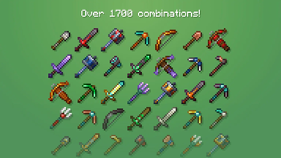
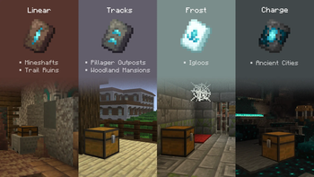
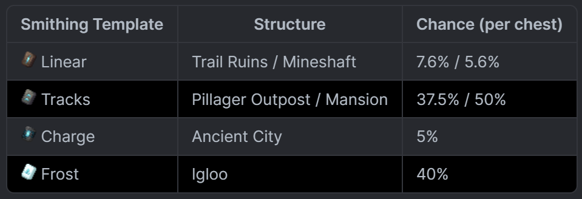
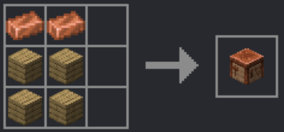
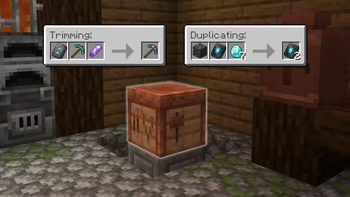
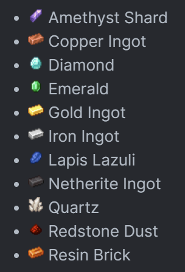
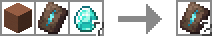

Voici un extrait parmi plus de 1700 combinaisons possibles avec les Tool Trims, illustrant l’étendue des options et la richesse des personnalisations disponibles.
Chaque combinaison permet d’apporter une touche unique à vos outils, en variant les matériaux, les styles et les finitions pour créer un rendu entièrement personnalisé.
Ce que vous voyez ici ne représente qu’une petite partie des possibilités offertes, laissant place à une grande liberté de création et d’expérimentation.

Voici un guide détaillé pour trouver les différents trims et comprendre leurs chances de tomber dans les coffres, afin de maximiser vos collections et planifier vos expéditions.
La Linear peut être obtenue dans les Trail Ruins, avec une probabilité de 7,6 % par coffre, ainsi que dans les Mineshafts avec 5,6 % par coffre. Ces lieux sont parfaits pour les explorateurs qui aiment combiner aventure et recherche méthodique.
La Tracks se récupère dans les Pillager Outposts avec 37,5 % de chance par coffre, et dans les Mansions avec une probabilité encore plus élevée, de 50 %. Ces trims sont idéaux pour ceux qui veulent enrichir rapidement leur collection grâce à des endroits à fort potentiel de loot.
La Charge est disponible dans les Ancient Cities, avec 5 % de chance par coffre. Bien que rare, ce trim apporte un style distinctif et vaut la peine d’être recherché par les aventuriers persévérants.
La Frost se trouve dans les Igloos avec 40 % de chance par coffre, apportant une esthétique glaciale unique qui se démarque des autres trims.
Chaque type de trim possède ses propres lieux et probabilités, ce qui rend leur collecte non seulement stratégique mais aussi captivante. Connaître ces informations vous permet de planifier vos excursions efficacement et de maximiser vos chances d’obtenir exactement le trim que vous recherchez.


Et enfin, pour craft la table Tool Trims, il vous faut :
2 lingots de cuivre et 4 planches, disposés exactement de la même manière que pour la table de forgeron.
Suivre cette disposition correctement est essentiel pour réussir la fabrication de votre table et pouvoir commencer à personnaliser vos trims.

Et voici un guide détaillé pour crafter vos outils et gérer vos trims efficacement :
Pour créer un nouvel outil avec un trim, il vous faut : 1 trim, 1 outil et 1 minerai (voir la liste ci-dessous). Cette combinaison vous permet d’appliquer un style unique à votre outil tout en conservant ses propriétés.
Pour dupliquer un trim, vous aurez besoin de : 1 objet spécifique au trim (voir la liste ci-dessous), 1 trim et 7 diamants. Cette méthode vous offre la possibilité de multiplier vos trims sans perdre ceux que vous possédez déjà, ce qui est idéal pour expérimenter différentes combinaisons et personnaliser vos outils selon vos préférences.
En suivant ces étapes, vous pourrez gérer vos trims de manière stratégique, optimiser vos ressources et créer des outils qui reflètent parfaitement votre style et votre collection.

La liste des minerais comprend :
Amethyst, Cuivre, Diamant, Émeraude, Or, Fer, Lapis, Netherite, Quartz, Redstone et Resin.
Chaque minerai possède ses caractéristiques uniques et peut être utilisé pour crafter différents outils et trims, offrant ainsi une grande variété de combinaisons possibles.
Connaître ces minerais et leur utilité vous permet de planifier votre progression, d’optimiser vos ressources et de personnaliser vos outils avec stratégie, tout en ajoutant un aspect ludique et stratégique à votre aventure.

Pour chaque trim, le matériau correspondant est :
Linear : Terracotta
Tracks : Pierre
Charge : Pierre des Abîmes
Frost : Neige
Ces matériaux sont essentiels pour appliquer correctement le trim sur vos outils ou vos armures. Chacun d’eux confère un style unique et distinctif, permettant à vos créations de se démarquer visuellement.
En connaissant le matériau requis pour chaque trim, vous pouvez préparer vos ressources à l’avance, planifier vos sessions de crafting et donner à vos outils et armures un aspect personnalisé qui reflète votre style et votre collection.
